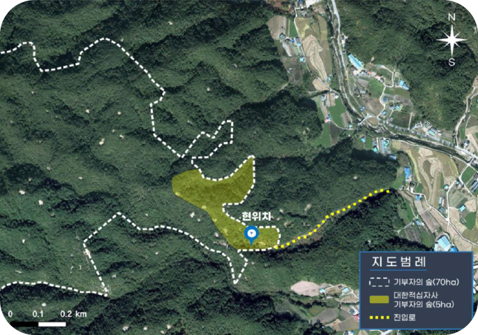

- 발생일자: 2022. 3. 4. ~ 3. 13.(213시간 진화)
- 피해면적: 16,302ha(울진 14,140ha, 삼척 2,162ha)
- 주택 259채, 농기계 1,720대 등 대형피해 발생
▶ 울진과 삼척지역에 발생한 산불은
울진군 북면 두천리에서 시작되어
건조한 날씨에 강풍이 겹치면서 급속히 확산되어
대규모 피해가 발생하였습니다.
- 발생일자: 2022. 3. 4. ~ 3. 13.(213시간 진화)
- 피해면적: 16,302ha(울진 14,140ha, 삼척 2,162ha)
- 주택 259채, 농기계 1,720대 등 대형피해 발생
▶ 2022년 울진·삼척 산불피해지 면적 중
넓은 면적(약 30%, 4,743ha)이
보호구역(산림유전자원보호구역,
덕구군립공원, 산양서식지)에 해당합니다.
대한적십자사는 보호구역 산불피해지를 대상으로
산불 이전 상태와 가깝게,
산림생태계의 구조와 기능
을 회복시키고자 모금 캠페인을 추진,
많은 후원자님
이 한마음 한 뜻으로 참여해 주셨습니다.
- 모금기간: 2022. 4. ~ 2023. 5.
- 총모금액: 금507,695,311원
- 총모금액: 금507,695,311원
- 사용계획: 울진 산불피해지의 산림생태복원에 전액 사용됩니다.
산불피해지의 산불피해 실태를 확인하고
산림보전의 가치확산을 위한
기회를 마련하고자
기부자의 숲을 조성합니다.
2022년 울진 보호구역 산불피해지 복원을 위해 기부해주신 국민과 기업의 기부금으로!
경상북도 울진군 북면 상당리 산6번지 일원에 기부자의 숲을 만들기로 결정!
*대한적십자사 ‘푸른 숲을 부탁해’ 기부자의 숲도 바로 이 곳!
산불피해지의 산불피해 실태를 확인하고
산림보전의 가치확산을 위한
기회를 마련하고자
기부자의 숲을 조성합니다.
2022년 울진 보호구역 산불피해지 복원을 위해
기부해주신 국민과 기업의 기부금으로!
경상북도 울진군 북면 상당리 산6번지 일원에
기부자의 숲을 만들기로 결정!
*대한적십자사 ‘푸른 숲을 부탁해’ 기부자의 숲도 바로 이 곳!

2023년 4월 21일,
기부자의 숲 산림생태복원(나무심기) 행사를
진행하였습니다.
기부자, 기부기업, 적십자봉사원, 청소년적십자, 산림청, 한국수목원정원관리원, 대한적십자사
임직원 약 150여 명이 모여 신갈나무, 꼬리진달래, 철쭉, 진달래, 금강송 등 산림생태복원 목표 대상종을
식재하였습니다.자연회복력에 기반하여 산불피해 이전의 산림으로 회복하기 위해 산림을 복원하고 있습니다.
기부자, 기부기업, 적십자봉사원, 청소년적십자,
산림청, 한국수목원정원관리원, 대한적십자사
임직원 약 150여 명이 모여 신갈나무, 꼬리진달래,
철쭉, 진달래, 금강송 등 산림생태복원 목표 대상종
을
식재하였습니다.
자연회복력에 기반하여 산불피해 이전의 산림으로
회복하기 위해 산림을 복원하고 있습니다.
2022년 동해안 보호구역 산불피해지
산림생태복원 기본계획에 따라,
산림생물다양성이 유지될 수 있는
산림생태복원이 추진됩니다!!
2022년 동해안 보호구역 산불피해지
산림생태복원 기본계획에 따라,
산림생물다양성이 유지될 수 있는
산림생태복원이 추진됩니다!!